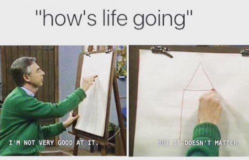

“I’m not enough.” And/or its sister, “I’m not good enough.”
Yes we’re supposed to think positive and not dwell on the negative. We’re supposed to be grateful for what we have. We’re supposed to like or even love ourselves. We’re supposed to have so much well-being that it spills out into generous helpings for others.
Most of us don’t come anywhere close to living up to all that.
Which is perhaps why most of us have secrets.
Let’s face it, behind the polite public, “I’m good! How are you?” we know we’re not good enough.
How else to explain the ball that suddenly doesn’t go over the net in competition against a lesser-ranked player? How else to explain the thought-it-was-ok artwork that no one is banging down the door to buy? What about the book not written, or if written not published, or if published not a best seller?
Surely others don’t have this problem. Surely they're enough.
I mean look at those neighbors with more money, the happily married couple snuggling while we spend Valentines Day alone, all those folks not on antidepressants, the enlightened luckys sitting around peacefully enjoying their completeness while we attend yet another silent retreat.
And then there's us, hoping to catch even a whiff of the very grand something that seems to be so very missing...
In our selves.
So much pain in not being enough.
Which is kind of funny when we think about it (laughing yet?).
Because how can something that isn't there, hurt?
Hmmm. Maybe it’s not the actual lack that causes pain. Maybe it’s what the lack means.
Y'know, about us. As a person.
Whatever that means.
“Oh no, the little ball didn’t go in the hole! This means I’m a weak loser not-good-enough player and person.” “Oh no, my paintings sit against the wall not earning income! This means I’m an unloved non-artist who should just give up painting, and maybe even life, completely.”
Oh yes it goes there. Never underestimate the mind’s ability to turn everything into a referendum and absolute failure of the self.
We're obsessed with what things mean about us, what is missing in us, what is wrong with us.
And to feed that obsession we turn to situations and outcomes, asking every given happening to help us figure out our “true nature.”
So naturally outcomes like a competition score, a body-type, a house, a grand blissful experience, are what we use to tell us what we are.
Although how do we not notice that none of that is an actual person? A check is not a person, a trophy is not a person, a shape is not a person, a compliment is not a person.
These are indications of a person. Pointers to a person. They're shadows which indicate an object somewhere, but which are not the actual object.
These are hints but nothing actual.
Yet somehow we turn them into, "This result means I AM."
Which as it turns out is all we've ever cared about. All we've ever wanted to do is define and prove a shadow-self which isn’t there.
So perhaps it’s starting to make sense why almost everyone feels less-than in some way.
We’ve been right all along. This sense of self feels perpetually not good enough because it isn't good enough.
It's not real, it's not there, and it's not at all what we are. Of course it feels like lack. That's what nothing feels like.
So ok then, what do we do with this?
Well, rather than focus on empowerment and confidence and trying to improve results (“I know I can find a way to get myself to win, dammit!”),
maybe it makes more sense to play with detaching the sense of who we are from outcomes, results, and happenings.
Maybe we don't have to be quite so attached to being defined by an atta-boy, a good-hair day, an enlightenment experience.
Maybe what we are is independent of outcomes.
Even more strangely, more scandalously… maybe it doesn’t even matter what we are.
Maybe whether we’re good, or nice, or a winner, or even here at all...
absolutely nothing cares.
Maybe results don’t matter one whit to existence.
I mean, wouldn't it be something if experience-
all experience including winning and losing and getting and not having-
All of it
turned out to be, in itself,
the point and
dare I even say…
could it even be...
enough.
Click here to subscribe to get your Mind-Tickled every week. http://eepurl.com/bQJg9v
Click here to see Judy on Buddha at the Gas Pump. https://www.youtube.com/watch?v=MnxlpQC2PBU&t=6s
